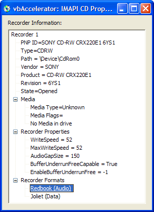
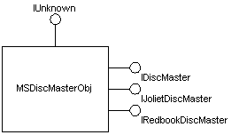
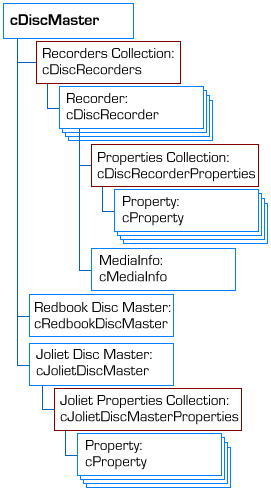

VB5 IMAPI Library Binary (26K)
VB5 IMAPI Library Binary (26K)
 VB5 IMAPI Library Source (74K)
VB5 IMAPI Library Source (74K)
 VB5 IMAPI Properties Demonstration (31K)
VB5 IMAPI Properties Demonstration (31K)
 VB6 IMAPI Library Binary (27K)
VB6 IMAPI Library Binary (27K)
 VB6 IMAPI Library Source (74K)
VB6 IMAPI Library Source (74K)
 VB6 IMAPI Properties Demonstration (30K)
VB6 IMAPI Properties Demonstration (30K)
 12 Jun 2004
12 Jun 2004
First Posted
 vbAccelerator TreeView Control
vbAccelerator TreeView Control
 Simple Data CD Creation Using ICDBurn
Simple Data CD Creation Using ICDBurn
 VB IMAPI (CD Burning) Interfaces (IVBIMAPI.tlb)
VB IMAPI (CD Burning) Interfaces (IVBIMAPI.tlb)
 Mapping NT Device Names to Drive Letters and vice-versa
Mapping NT Device Names to Drive Letters and vice-versa

Image Mastering API (IMAPI) Library for VB
IMAPI is provided with Windows XP and above to provide full control over the creation of audio and data discs. This sample provides a wrapper around the API allowing it to be used from VB.
About IMAPI
The Image Mastering API allows an application to stage and burn a simple audio or data image to CD-R and CD-RW devices. All XP and above systems come with the Adaptec implementation of IMAPI, which is controlled through the MSDiscMasterObj COM object. In theory other implementations of the API could be made available by vendors but I have not seen any details of any other implementations. The API interfaces are briefly described in the diagram and table below:
MS Disc Master Object
| Interface | System | Description |
| ICDBurn | Shell | Simple interface for writing files to CD. Burn method copies staging area to CD. |
| IDiscMaster | IMAPI | Controls an IMAPI session. Opens, closes, enumerates and selects recorders, and allows burning of data or audio discs. |
| IDiscRecorder | IMAPI | Provides access to a single recorder connected to the system. |
| IRedbookDiscMaster | IMAPI | Contains functions to create a Redbook (audio) disc on the active recorder. |
| IJolietDiscMaster | IMAPI | Contains functions to create a Joliet (data) disc on the active recorder. |
| IDiscMasterProgressEvents | IMAPI | Interface you can implement to receive feedback about progress during a burn and notification of Plug'n'Play events affecting the available recorders. |
CD Burning and IMAPI Interfaces
Although IMAPI is implemented using COM, it is not implemented in a VB-friendly way. The DLLs containing the implementations do not have type libraries, so you cannot add a reference to them in Visual Basic; and even if they did they use some interfaces which cause a lot of problems to VB apps, not least IPropertyStorage and the use of enumerations with structures as return values. Not just that, but the interface is not even defined using IDL or ODL; it is instead provided in a nasty MIDL generated file making it usable (just) from C and C++ applications.
The first step in making this usable from VB is to define a Type Library for the interfaces. I'll cover this in the next section.
Implementing an IMAPI Type Library for VB
There's a fair amount of code involved in implementing a type library like this. To explain how it works we'll take the example of the IDiscMaster interface. First, here's an excerpt of what you get from the Platform SDK, which includes the declares in imapi.h:
EXTERN_C const IID IID_IDiscMaster;
#if defined(__cplusplus) && !defined(CINTERFACE)
MIDL_INTERFACE("520CCA62-51A5-11D3-9144-00104BA11C5E")
IDiscMaster : public IUnknown
{
public:
virtual /* [helpstring] */ HRESULT STDMETHODCALLTYPE
Open( void) = 0;
virtual /* [helpstring] */ HRESULT STDMETHODCALLTYPE
EnumDiscMasterFormats(
/* [out] */ IEnumDiscMasterFormats **ppEnum) = 0;
virtual /* [helpstring] */ HRESULT STDMETHODCALLTYPE
GetActiveDiscMasterFormat(
/* [out] */ LPIID lpiid) = 0;
virtual /* [helpstring] */ HRESULT STDMETHODCALLTYPE
SetActiveDiscMasterFormat(
/* [in] */ REFIID riid,
/* [iid_is][out] */ void **ppUnk) = 0;
virtual /* [helpstring] */ HRESULT STDMETHODCALLTYPE
EnumDiscRecorders(
/* [out] */ IEnumDiscRecorders **ppEnum) = 0;
virtual /* [helpstring] */ HRESULT STDMETHODCALLTYPE
GetActiveDiscRecorder(
/* [out] */ IDiscRecorder **ppRecorder) = 0;
virtual /* [helpstring] */ HRESULT STDMETHODCALLTYPE
SetActiveDiscRecorder(
/* [in] */ IDiscRecorder *pRecorder) = 0;
virtual /* [helpstring] */ HRESULT STDMETHODCALLTYPE
ClearFormatContent( void) = 0;
virtual /* [helpstring] */ HRESULT STDMETHODCALLTYPE
ProgressAdvise(
/* [in] */ IDiscMasterProgressEvents *pEvents,
/* [retval][out] */ UINT_PTR *pvCookie) = 0;
virtual /* [helpstring] */ HRESULT STDMETHODCALLTYPE
ProgressUnadvise(
/* [in] */ UINT_PTR vCookie) = 0;
virtual /* [helpstring] */ HRESULT STDMETHODCALLTYPE
RecordDisc(
/* [in] */ boolean bSimulate,
/* [in] */ boolean bEjectAfterBurn) = 0;
virtual /* [helpstring] */ HRESULT STDMETHODCALLTYPE
Close( void) = 0;
};
Converting this into a type library which you can use from VB requires a few steps:
- Converting the C++ style definitions into IDL/ODL.
- Ensuring the type library includes all of the interfaces needed.
- Converting types which VB does not support into standard VB types.
Performing the first step can be done by looking at the source code for another type library, or using the OLE/COM Object Viewer (OLEView.exe, provided with the Platform SDK) to generate a type library from a DLL you create in Visual Basic with similar method declarations.
The second step means you need to also implement the IEnumDiscMasterFormats, IEnumDiscRecorders, IDiscRecorder and IDiscMasterProgressEvents interfaces, as well as providing a UUID type for use in the REFIID and LPIID parameters. Note that some of the interfaces have an out parameter using an interface with the **pp[Type] parameter description. This means that the parameter will be set to a new instance of a COM object. In these cases you need to be able to call AddRef and Release on the object, and so you also need an IUnknown implementation.
The last step is the most tricky and needs some experience with VB Type Libraries, or some judicious copying of other samples. Downloading the type library source code from the site as well as from Edanmo's VB Page should help when doing this. In this case the changes are:
- void ** represents a pointer to a new COM object allocated by the class. Since all COM objects must implement IUnknown this can be replaced with IUnknown **, which is equivalent to As Object in VB.
- The void instance in the Open method just indicates no parameters and so can be missed out.
- UINT_PTR is a specialisation of long.
- boolean is also specialisiation of long which takes the 0 for False and 1 for True.
- REFIID and LPIID both represent a UUID structure passed by reference, so become UUID *.
- Note that the HRESULT signature affects the way code is generated. A
HRESULT is either a success code or an error code, and in VB failure gets mapped
to throwing an error (success codes are ignored). If you need to find out the return value you can change
any method returning a HRESULT to a long. For example:
HRESULT _stdcall Open();
results in the VB version having the signature Sub Open(), which will throw an error if the HRESULT is an error.
long _stdcall Open();
Would result in a VB version Function Open() As Long, which allows you to get the result code from the return value.
The final ODL for this interface then becomes:
// --------------------------------------------------------
// IDiscMaster
// --------------------------------------------------------
[
odl,
uuid(520CCA62-51A5-11D3-9144-00104BA11C5E),
helpstring("Visual Basic version of IDiscMaster interface")
]
interface IVBDiscMaster : IUnknown
{
[helpstring("Opens an IMAPI object")]
HRESULT _stdcall Open();
[helpstring("Retrieves a format enumerator")]
HRESULT _stdcall EnumDiscMasterFormats(
[out] IVBEnumDiscMasterFormats **ppEnum);
[helpstring("Retrieves the currently selected recorder format")]
HRESULT _stdcall GetActiveDiscMasterFormat(
[out] UUID *lpiid);
[helpstring("Sets a new active recorder format")]
HRESULT _stdcall SetActiveDiscMasterFormat(
[in] UUID *riid,
[out] stdole.IUnknown **ppUnk);
[helpstring("Retrieves a recorder enumerator")]
HRESULT _stdcall EnumDiscRecorders(
[out] IVBEnumDiscRecorders **ppEnum);
[helpstring("Gets the active disc recorder")]
HRESULT _stdcall GetActiveDiscRecorder(
[out] IVBDiscRecorder **ppRecorder);
[helpstring("Sets the active disc recorder")]
HRESULT _stdcall SetActiveDiscRecorder(
[in] IVBDiscRecorder *pRecorder);
[helpstring("Clears the contents of an unburnt image")]
HRESULT _stdcall ClearFormatContent();
[helpstring("Registers for progress notifications")]
HRESULT _stdcall ProgressAdvise(
[in] IVBDiscMasterProgressEvents *pEvents,
[out] long *pvCookie);
[helpstring("Cancels progress notifications")]
HRESULT _stdcall ProgressUnadvise(
[in] long vCookie);
[helpstring("Burns the staged image to the active recorder")]
HRESULT _stdcall RecordDisc(
[in] long bSimulate,
[in] long bEjectAfterBurn);
[helpstring("Closes the interface")]
HRESULT _stdcall Close();
}
Note that I didn't understand the [reval] attribute when I started doing this, but in the case of ProgressAdvise method making the last parameter [out, retval] would have meant the method would return the cookie, rather than requiring a ByRef As Long parameter to be passed in.
Once this process has been completed for all the required interfaces, then the Type Library can be built using the MkTypLib.exe command line utility provided with the Platform SDK.
Wrapping the Type Library
In theory, the type library can be used directly in an application. However, in practice that turns out to be somewhat awkward. A case in point is reading the list of properties associated with a recorder (which include things like the drive speed). Here's the code needed to enumerate all the properties for an IPropertyStorage instance:
Private m_props As IPropertyStorage
Private m_colProps As Collection
Sub GetProperties(props As IPropertyStorage)
Set m_colProps = New Collection
Set m_props = props
' Nasty IPropertyStorage
Dim hR As Long
Dim fetched As Long
Dim enumProps As IEnumSTATPROPSTG
Dim propStg As STATPROPSTG
Dim propSpecifier As PROPSPEC
Dim sName As String
Dim lSize As Long
Dim Value As Variant
Dim cProp As cProperty
Dim lErr As Long
' Get the property enumerator:
Set enumProps = m_props.Enum
' Add a reference to it:
enumProps.AddRef
Do
' Get a property from the enumerator:
hR = enumProps.Next(1, propStg, fetched)
If Not (FAILED(hR)) And (fetched > 0) Then
' Get the value of the property
propSpecifier.ID_or_LPWSTR = propStg.propid
propSpecifier.ulKind = PRSPEC_PROPID
props.ReadMultiple 1, propSpecifier, Value
' Place the id, name and value of the property into
' a VB class (note Value may be of unsupported type,
' in which case trying to access it throws an error):
Set cProp = New cProperty
On Error Resume Next
cProp.fInit propStg.propid, lpwstrPtrToString(propStg.lpwstrName), Value
lErr = err.Number
On Error GoTo 0
If (lErr = 0) Then
m_colProps.Add cProp
End If
' Free string returned by the property read (part of
' the IEnumSTATPROPSTG contract):
CoTaskMemFree propStg.lpwstrName
End If
Loop While Not (FAILED(hR)) And fetched > 0
' Release the reference to the property enumerator
' and ensure VB does not try to release it again
enumProps.Release
CopyMemory enumProps, 0&, 4
End Sub
Private Function lpwstrPtrToString(ByVal lpwstrPtr As Long) As String
Dim lSize As Long
If Not (lpwstrPtr = 0) Then
lSize = lstrlenW(ByVal lpwstrPtr)
If (lSize > 0) Then
ReDim b(0 To (lSize * 2) - 1) As Byte
CopyMemory b(0), ByVal lpwstrPtr, lSize * 2
lpwstrPtrToString = b
End If
End If
End Function
As you see, the use of VB-hostile COM structures means that the code becomes fairly difficult to read and use; the code is basically low-level C++ but without the useful bits like smart pointers! For this reason, the vbalIMAPI Library was created as a wrapper around the API. This allows you to use the IMAPI functions without quite so much pain.
Using the vbalIMAPI DLL
To use the vbalIMAPI library you will need a reference both to vbalIMAPI.DLL and to the VB CD Mastering API Type Library (IVBIMAPI.tlb). Note the Type Library is only required at design-time. The main objects provided by this library are shown in the diagram below:
Main VBIMAPI Library Objects.
The next five sections describe the main parts of the API. The property collections are not covered here, but should be fairly self explanatory as they are simply a collection of cProperty objects; these objects have an ID and an associated Name and a variant Value.
1. cDiscMaster
The cDiscMaster class is the only directly instantiable class in the library and controls access to all of the other functions. The methods are as follows:
- Initialise
Instantiates the underlying ICDBurn implementation and MSDiscMasterObj objects. Must be called before any other function is used. - ClearUp
Terminates access to the MSDiscMasterObj and clears up all objects associated with the library. Note this can take a few seconds as the object clears up the stash allocated for your session. It is best to call this method explicitly before your application ends and set the cDiscMaster instance to Nothing. - Recorders
Gets the collection of recorders on the system. See the cDiscRecorders object for more information on this collection. - RefreshRecorders
Refreshes the list of recorders. The library caches recorder instances when the Recorders method is called for the first time; this allows the list to be updated. - RedbookDiscMaster
Gets a cRedbookDiscMaster object which is used to build up an audio CD image for the active recorder. - JolietDiscMaster
Gets a cJolietDiscMaster object which is used to build up a data CD image for the active recorder. - RecordDisc
Records (or simulates recording) all of the data placed into either the Redbook or Joliet disc image. - ClearFormatContent
Clears any content added to the Redbook or Joliet disc image. - SimpleRecorder
Gets a cSimpleDiscRecorder object which can burn a CD using the ICDBurn interface (see article Simple Data CD Creation Using ICDBurn for details).
The class also raises these events:
- AddProgress
Raised as data is added to either a Redbook or Joliet disc image. - QueryCancel
Raised during a burn process to request whether to cancel or not. - PreparingBurn
Raised when a disc burn is started but before any data is written to disc. - BlockProgress
Raised during CD buring as blocks are written to the disc. - TrackProgress
Raised as tracks are burnt to an audio CD. - ClosingDisc
Raised when the CD burn has completed and the disc is being closed. - BurnComplete
Raised when a burn operation has completed. - EraseComplete
Raised when a CDRW Erase has completed. - PnPActivity
Raised when a Plug and Play drive is added to or removed from the system.
2. cDiscRecorders
This class provides access to the collection of recorders connected to the system.
- Count
Returns the number of recorders attached to the system. - Recorder (default)
Returns a cDiscRecorder for the specified 1-based index. - ActiveRecorder
Returns the currently cDiscRecorder.
3. cDiscRecorder
This class provides information about a recorder attached to the system and allows a recorder to be made the active recorder for disc mastering. It also provides functions to query the disc media in the drive and to erase CD-RW media.
- VendorId, ProductId, RevisionId
Returns strings suitable for identifying the recorder on the system. - PnPID
Returns the Plug and Play ID of the recorder (typically the VendorId, ProductId and RevisionId combined. - Path
Gets the path to the recorder. On my system, this is the NT device name, such as \Device0\CdRom0, rather than the actual drive letter. You can use the code in the tip Mapping Drive names to NT Device names to get the drive letter. - RecorderState
Returns the current state of the recorder: one of :- RECORDER_DOING_NOTHING
- RECORDER_OPENED
- RECORDER_BURNING
- MediaInfo
Gets a cMediaInfo object with more details of the current media. The recorder must have been opened for exclusive access using OpenExclusive before querying this method. cMediaInfo contains these fields:- MediaPresent
Returns true if media is detected in the recorder. - MediaType
Gets the media type in the recorder. The recorder must have been opened for exclusive access using OpenExclusive before querying this method. The media type returned is one of:- MEDIA_CD_OTHER
- MEDIA_CD_I
- MEDIA_CD_EXTRA
- MEDIA_CD_ROM_XA
- MEDIA_CDDA_CDROM
- MEDIA_SPECIAL
- MediaFlags
Gets information about the state of the media in the recorder. The recorder must have been opened for exclusive access using OpenExclusive before querying this method. The return value is a bitwise-OR combination of one or more of these flags:- MEDIA_BLANK
- MEDIA_RW
- MEDIA_WRITABLE
- MEDIA_FORMAT_UNUSABLE_BY_IMAPI
- Sessions - number of sessions on the disc.
- LastTrack - track number of the last track of the previous session.
- StartAddress - start address of the last track of the previous session.
- LastWritable - address to begin writing.
- FreeBlocks - number of blocks available for writing.
- MediaPresent
- OpenExclusive
Opens the recorder for exclusive access. This is needed to read the media info. Note that you cannot burn an image to disc if you have the recorder opened in exclusive mode. - CloseExclusive
Closes the recorder if previously opened using OpenExclusive. - EraseCDRW
Erases CD-RW media in the drive. The recorder must be the active recorder. - IsActive
Returns true if this is the active recorder on the system. - SetAsActive
Sets this recorder to be the active recorder on the system. - SupportsRedbook
Returns true if this recorder supports recording Redbook (audio) discs. - SupportsJoliet
Returns true if this recorder supports recording Joliet (data) discs. - Properties
Returns a cDiscRecorderProperties collection containing the properties of the recorder. Properties are dependent on the currently active mastering format for the CD as well as the Media that is in the drive. Properties include things like WriteSpeed and AudioGapSize . - SetProperties
Updates the properties associated with the recorder. Attempts to update read-only properties are ignored.
4. cRedbookDiscMaster
This class is allows a Redbook (audio) CD image to be constructed in the stash, which can be subsequently burnt using the BurnCD method of the cDiscMaster object. The class expects audio data to be presented as raw Wave data in the CD audio format, which is 16-bit stereo with 44,100 samples/second. The data should be arranged as alternate left/right signed 16-bit sample pairs.
- AudioBlockSize
Gets the size of a single block on the CD in bytes. This value is always 2352, which is 1/75 of a second of audio, also known as a "Frame". - AvailableTrackBlocks
Returns the number of track blocks available on the disc. - TotalAudioBlocks
Returns the total number of track blocks on the disc. - UsedAudioBlocks
Returns the number of used track blocks on the disc. - TotalAudioTracks
Returns the total number of tracks on the disc. Audio CDs may have up to 99 tracks. - CreateAudioTrack
Creates a new audio track to which data can be added using the AddAudioTrackBlocks method. The size of the track in blocks needs to be specified when creating the track. - AddAudioTrackBlocks
Adds a chunk of audio data to the current track opened with CreateAudioTrack. The first parameter is a pointer to a block of memory containing the raw wave data, and the second is the number of bytes. Any data added to the CD must be added in chunks of the AudioBlockSize, otherwise an error will occur. - CloseAudioTrack
Closes a track once all of the data has been added.
5. cJolietDiscMaster
This class is allows a Joliet (data) CD image to be constructed in the stash, which can be subsequently burnt using the BurnCD method of the cDiscMaster object. The class requires that all files to be added are added using COM IStorage objects, which makes this class particularly hard to use from VB.
- DataBlockSize
Gets the size of a single data block on the CD in bytes. This value is always 2048. - TotalDataBlocks
Returns the total number of data blocks on the disc. - UsedDataBlocks
Returns the number of used data blocks on the disc. - Properties
Gets a cJolietDiscMasterProperties object containing the properties associated with this data image. Joliet properties include such things as the Volume Name. - SetProperties
Updates the Joliet properties with new values. Attempts to update read-only properties are ignored. - AddData
Adds data to the data CD image from an IStorage implementation.
Sample Application
The sample application provided with the downloads enumerates recorders on the system and displays information about the recorder, media and supported buring formats. This exercises most of the classes in the sample other than the Redbook and Joliet stash classes. To run the sample, you will need the following registered on your system:
- VBIMAPI.TLB type library.
- vbalImapi6.DLL library.
- vbalTreeView6.OCX, which is the TreeView control used to display the results.
- SSubTmr6.OCX, which is supports the TreeView control.
Any application which wants to use the library requires an instance of the cDiscMaster interface. The code to set up and clear up this object is shown below. Note that the ClearUp method tends to take a little while, so you might want to provide the user with some feedback whilst it's happening:
Private m_cDiscMaster As cDiscMaster Private Sub Form_Load() Set m_cDiscMaster = New cDiscMaster m_cDiscMaster.Initialise End Sub Private Sub Form_QueryUnload(Cancel As Integer, UnloadMode As Integer) Screen.MousePointer = vbHourglass m_cDiscMaster.ClearUp Screen.MousePointer = vbDefault End Sub
The next thing is to enumerate through the recorders on the system and show the basic recorder information:
Private Sub ShowRecorders()
Dim cRecorders As cDiscRecorders
Dim cRecorder As cDiscRecorder
Dim iRecorder As Long
Set cRecorders = m_cDiscMaster.Recorders
For iRecorder = 1 To cRecorders.Count
Set cRecorder = cRecorders(iRecorder)
With cRecorder
Debug.Print "PnPID=" & .PnPID
Debug.Print "VendorID=" & .VendorID
Debug.Print "ProductID=" & .ProductID
Debug.Print "RevisionID=" & .RevisionID
' ... More to be added here
End With
Next iRecorder
End Sub
If the recorder has a disc in it, then we can show the media information. In order to gain access to the media information, you must open the recorder exclusively; as far as I know this is the only time you should do this and it is wise to close the recorder again as soon as possible:
Dim cMedia As cMediaInfo
.OpenExclusive
Set cMedia = cRecorder.MediaInfo
Debug.Print "Media:"
If cMedia.MediaPresent Then
Debug.Print " Media Type=" & cMedia.MediaType
Debug.Print " Media Flags=" & cMedia.MediaFlags
Debug.Print " Sessions=" & cMedia.Sessions
Debug.Print " LastTrack=" & cMedia.LastTrack
Debug.Print " Start=" & cMedia.StartAddress
Debug.Print " Next=" & cMedia.LastWritable
Debug.Print " Free=" & cMedia.FreeBlocks
Else
Debug.Print " No Media in drive"
End If
.CloseExclusive
Finally, we can display the recorder properties and supported burning formats (although it is very unlikely you'll have a recorder that doesn't support audio and data):
Dim iProperty As Long
Debug.Print "Properties:"
With .Properties
For iProperty = 1 To .Count
With .Property(iProperty)
Debug.Print " " & .Name & " = " & .Value
End With
Next iProperty
End With
Debug.Print "Recording Formats:"
If (.SupportsRedbook) Then
Debug.Print " Redbook (audio)"
End If
If (.SupportsJoliet) Then
Debug.Print " Joliet (data)"
End If
That's pretty much it for this demo. Other articles in this section show more sophisticated uses of the library to actually burn CDs.
Conclusion
This article provides a wrapper allowing the Image Mastering API to be used from VB. The wrapper is provided because although IMAPI is a COM interface, it is pretty hostile to use directly from VB and requires a fairly low-level approach to COM programming to make it work.